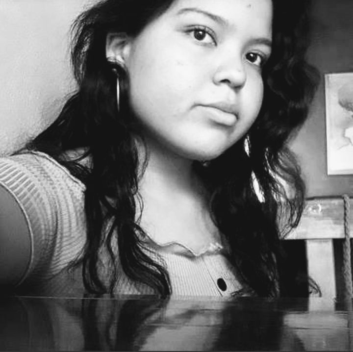

|  |
Hola, como dije anteriormente mi nombre es Cristina, vivo en la ciudad de Comayagua, Honduras. Estudio en el Instituto Marista La Inmaculada, estoy estudiando Bachierato Técnico Profesional en Informática. Mi mayor aspiración es covertirme en una gran diseñador web, para poder ayudar a mis padres y a mi hermana.
Llevo dos años de carrera, actualmente estoy en el tercer y último año, este es el primer año en el que llevo esta clase que es Diseño Web, por lo que este es mi primer portafolio digital, estoy aprendiendo hasta ahora lo que es HTML, que es uno de los lenguajes de programación para páginas web.
|